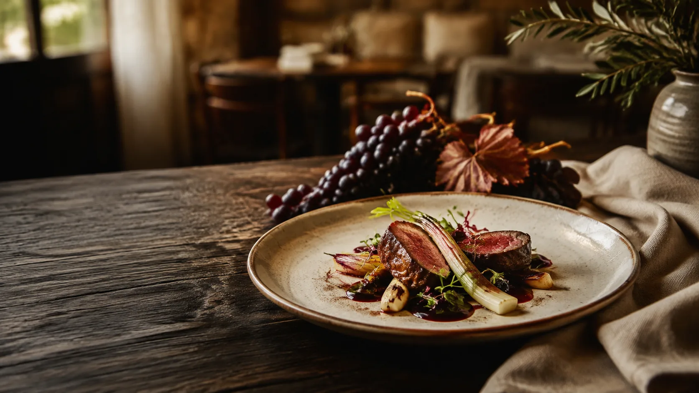

Restaurante asador
Asador
y brasa
Asados y carnes a la brasa forman parte de la cocina de La Grajera.
Asados
Pollo asado al horno
Codillo de cerdo asado al horno
Costilla de cerdo asada al horno
Conejo asado al horno
A la brasa
Secreto de cerdo a la brasa
Solomillo de cerdo a la brasa
Parrillada mixta de carne a la brasa
Disponibilidad según el día.
Momentos para compartir
Celebraciones
Celebra tus momentos especiales en La Grajera.
Consulta disponibilidad y opciones para grupos y celebraciones.
- Bodas
- Comuniones
- Bautizos
- Comidas de grupo
La Grajera
Galería

Te esperamos
Horarios
- Lunes a jueves
- 06:00 – 23:00
- Viernes
- 06:00 – 20:00
- Sábados y domingos
- 09:00 – 18:00
Los horarios pueden variar en festivos. Para confirmar, llámanos o escríbenos por WhatsApp.
Encuéntranos
Dónde estamos
Restaurante La GrajeraCarretera LO-20, Salida 13
26007 Logroño, La Rioja
Teléfono639 42 77 34